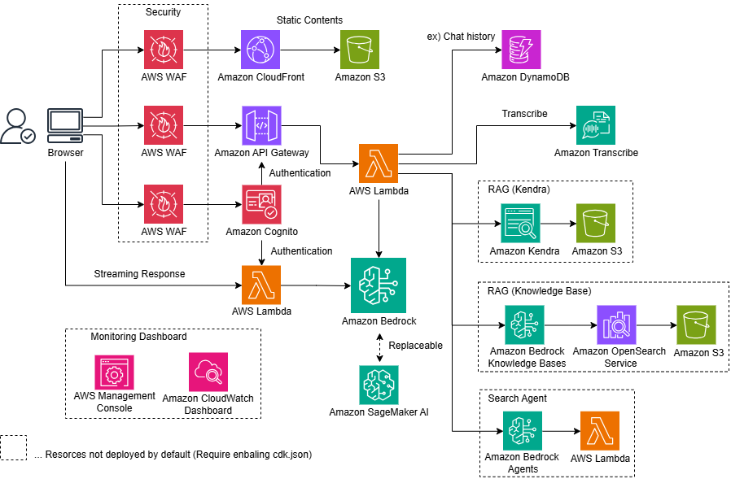

Generative AI Use Cases (GenU)¶


비즈니스 운영에서 생성형 AI를 활용하기 위한 비즈니스 사용 사례가 포함된 Well-architected 애플리케이션 구현

Important
GenU는 v4부터 다국어를 지원합니다.
GenU has supported multiple languages since v4.
GenU は v4 から多言語対応しました。일본어 문서는 여기를 참조하세요.
GenU 사용 패턴¶
여기서는 사용 패턴별로 GenU의 기능과 옵션을 소개합니다. 포괄적인 배포 옵션은 이 문서를 참조하세요.
Tip
사용 패턴을 클릭하면 세부 정보를 볼 수 있습니다
생성형 AI 사용 사례를 경험하고 싶습니다
GenU는 생성형 AI를 활용한 다양한 표준 사용 사례를 제공합니다. 이러한 사용 사례는 비즈니스 운영에서 생성형 AI를 활용하는 방법에 대한 아이디어의 씨앗 역할을 하거나, 그대로 비즈니스에 직접 적용할 수 있습니다. 앞으로도 더욱 정교한 사용 사례를 지속적으로 추가할 예정입니다. 불필요한 경우 옵션으로 특정 사용 사례를 숨길 수도 있습니다. 다음은 기본적으로 제공되는 사용 사례입니다.
| 사용 사례 | 설명 |
| 채팅 | 대화형 언어 모델(LLM)과 채팅 형식으로 상호작용할 수 있습니다. LLM과 직접 대화할 수 있는 플랫폼의 존재는 특정하고 새로운 사용 사례에 대한 빠른 응답을 가능하게 합니다. 프롬프트 엔지니어링을 위한 테스트 환경으로도 효과적입니다. |
| 텍스트 생성 | 모든 맥락에서 텍스트를 생성하는 것은 LLM이 뛰어난 작업 중 하나입니다. 기사, 보고서, 이메일을 포함한 모든 종류의 텍스트를 생성합니다. |
| 요약 | LLM은 대량의 텍스트를 요약하는 데 뛰어납니다. 단순한 요약을 넘어서, 텍스트를 맥락으로 제공한 후 대화형 형식으로 필요한 정보를 추출할 수도 있습니다. 예를 들어, 계약서를 읽은 후 "XXX의 조건은 무엇인가요?" 또는 "YYY의 금액은 얼마인가요?"와 같은 질문을 할 수 있습니다. |
| 회의록 | 오디오 녹음이나 실시간 전사에서 회의록을 자동으로 생성합니다. 프롬프트 엔지니어링 없이도 전사, 신문, FAQ 스타일 중에서 선택할 수 있습니다. |
| 글쓰기 | LLM은 오타뿐만 아니라 텍스트의 흐름과 내용을 고려하여 더 객관적인 관점에서 개선 사항을 제안할 수 있습니다. 다른 사람에게 작업을 보여주기 전에 놓칠 수 있는 부분을 LLM이 객관적으로 확인하여 품질 향상을 기대할 수 있습니다. |
| 번역 | 다국어로 훈련된 LLM은 번역을 수행할 수 있습니다. 단순한 번역을 넘어서, 캐주얼함과 대상 독자와 같은 다양한 지정된 맥락 정보를 번역에 통합할 수 있습니다. |
| 웹 콘텐츠 추출 | 블로그와 문서와 같은 웹 콘텐츠에서 필요한 정보를 추출합니다. LLM은 불필요한 정보를 제거하고 잘 구조화된 텍스트로 형식을 지정합니다. 추출된 콘텐츠는 요약 및 번역과 같은 다른 사용 사례에서 사용할 수 있습니다. |
| 이미지 생성 | 이미지 생성 AI는 텍스트나 기존 이미지를 기반으로 새로운 이미지를 생성할 수 있습니다. 아이디어의 즉각적인 시각화를 가능하게 하여 디자인 작업의 효율성을 향상시킬 수 있습니다. 이 기능에서 LLM은 프롬프트 생성을 도울 수 있습니다. |
| 비디오 생성 | 비디오 생성 AI는 텍스트에서 짧은 비디오를 생성합니다. 생성된 비디오는 다양한 시나리오에서 자료로 사용할 수 있습니다. |
| 비디오 분석 | 멀티모달 모델을 통해 이제 텍스트뿐만 아니라 이미지도 입력할 수 있습니다. 이 기능에서는 LLM에게 비디오 프레임과 텍스트 입력을 분석하도록 요청할 수 있습니다. |
| 다이어그램 생성 | 다이어그램 생성은 최적의 다이어그램을 사용하여 모든 주제의 텍스트와 콘텐츠를 시각화합니다. 쉬운 텍스트 기반 다이어그램 생성을 가능하게 하여 프로그래머나 디자이너가 아니어도 효율적으로 플로우차트 및 기타 다이어그램을 생성할 수 있습니다. |
| 음성 채팅 | 음성 채팅에서는 생성형 AI와 양방향 음성 채팅을 할 수 있습니다. 자연스러운 대화와 유사하게, AI가 말하는 동안 중단하고 말할 수도 있습니다. 또한 시스템 프롬프트를 설정하여 특정 역할을 가진 AI와 음성 대화를 할 수 있습니다. |
RAG를 하고 싶습니다
RAG는 LLM이 일반적으로 어려워하는 외부의 최신 정보나 도메인 지식을 제공하여 LLM이 평소에는 답할 수 없는 질문에 답할 수 있게 하는 기술입니다. 조직 내에 축적된 PDF, Word, Excel 및 기타 파일들이 정보 소스 역할을 할 수 있습니다. RAG는 또한 증거에 기반한 답변만을 허용함으로써 LLM이 "그럴듯하지만 잘못된 정보"를 제공하는 것을 방지하는 효과가 있습니다.
GenU는 RAG Chat 사용 사례를 제공합니다. RAG Chat에는 두 가지 유형의 정보 소스를 사용할 수 있습니다: Amazon Kendra와 Knowledge Base. Amazon Kendra를 사용할 때는 수동으로 생성된 S3 버킷이나 Kendra 인덱스를 그대로 사용할 수 있습니다. Knowledge Base를 사용할 때는 고급 파싱, 청크 전략 선택, 쿼리 분해, 재순위와 같은 고급 RAG 기능을 사용할 수 있습니다. Knowledge Base는 또한 메타데이터 필터 설정을 허용합니다. 예를 들어, "조직별로 접근 가능한 데이터 소스 전환" 또는 "사용자가 UI에서 필터를 설정할 수 있도록 허용"과 같은 요구사항을 충족할 수 있습니다.
또한 MCP 채팅을 활성화하고 외부 서비스의 MCP 서버를 packages/cdk/mcp-api/mcp.json에 추가하여 AWS 외부의 데이터를 참조하는 RAG를 구축할 수 있습니다.
조직 내에서 사용자 정의 Bedrock Agents 또는 Bedrock Flows를 사용하고 싶습니다
GenU에서 에이전트를 활성화하면 웹 검색 에이전트와 코드 인터프리터 에이전트가 생성됩니다. 웹 검색 에이전트는 사용자 질문에 답하기 위해 웹에서 정보를 검색합니다. 예를 들어, "AWS GenU란 무엇인가요?"에 답할 수 있습니다. 코드 인터프리터 에이전트는 사용자 요청에 응답하기 위해 코드를 실행할 수 있습니다. 예를 들어, "더미 데이터로 산점도를 그려주세요"와 같은 요청에 응답할 수 있습니다.
웹 검색 에이전트와 코드 인터프리터 에이전트는 기본적인 에이전트이지만, 비즈니스 요구에 맞춘 더 실용적인 에이전트를 사용하고 싶을 수 있습니다. GenU는 수동으로 생성했거나 다른 자산으로 생성한 에이전트를 가져오는 기능을 제공합니다.
GenU를 에이전트 활용 플랫폼으로 사용하면 GenU의 풍부한 보안 옵션과 SAML 인증을 활용하여 조직 내에 실용적인 에이전트를 확산시킬 수 있습니다. 또한 불필요한 표준 사용 사례를 숨기거나 에이전트를 인라인으로 표시하여 GenU를 더 에이전트 중심의 플랫폼으로 사용할 수 있습니다.
마찬가지로 Bedrock Flows에 대한 가져오기 기능이 있으므로 활용해 주세요.
또한 MCP 채팅을 활성화하고 외부 MCP 서버를 packages/cdk/mcp-api/mcp.json에 추가하여 AWS 외부 서비스에서 작업을 수행하는 에이전트를 생성할 수 있습니다.
사용자 정의 사용 사례를 생성하고 싶습니다
GenU는 자연어로 프롬프트 템플릿을 설명하여 사용자 정의 사용 사례를 생성할 수 있는 "Use Case Builder"라는 기능을 제공합니다.
프롬프트 템플릿만으로 사용자 정의 사용 사례 화면이 자동으로 생성되므로 GenU 자체에 대한 코드 변경이 필요하지 않습니다.
생성된 사용 사례는 개인용이 아닌 애플리케이션에 로그인할 수 있는 모든 사용자와 공유할 수 있습니다.
Use Case Builder는 필요하지 않은 경우 비활성화할 수 있습니다.
사용 사례는 .json 파일로 내보내어 제3자와 공유할 수도 있습니다. 사용 사례를 공유할 때는 프롬프트나 사용 예제에 기밀 정보가 포함되지 않도록 주의하세요. 제3자가 공유한 사용 사례는 새 사용 사례 생성 화면에서 .json 파일을 업로드하여 가져올 수 있습니다.
Use Case Builder에 대한 자세한 내용은 이 블로그를 확인하세요.
Use Case Builder는 텍스트를 양식에 입력하거나 파일을 첨부하는 사용 사례를 생성할 수 있지만, 요구사항에 따라 채팅 UI가 더 적합할 수 있습니다.
그런 경우에는 "채팅" 사용 사례의 시스템 프롬프트 저장 기능을 활용하세요.
시스템 프롬프트를 저장하면 한 번의 클릭으로 비즈니스에 필요한 "봇"을 생성할 수 있습니다.
예를 들어, "입력된 소스 코드를 철저히 검토하는 봇" 또는 "입력 내용에서 이메일 주소를 추출하는 봇"을 생성할 수 있습니다.
또한 채팅 대화 기록은 로그인한 사용자와 공유할 수 있으며, 공유된 대화 기록에서 시스템 프롬프트를 가져올 수 있습니다.
GenU는 OSS이므로 자체 사용 사례를 추가하도록 사용자 정의할 수도 있습니다.
그런 경우에는 GenU의 메인 브랜치와의 충돌에 주의하세요.
배포¶
[!IMPORTANT] >
/packages/cdk/cdk.json에 나열된modelRegion지역에서modelIds(텍스트 생성),imageGenerationModelIds(이미지 생성),videoGenerationModelIds(비디오 생성)를 활성화하세요. (Amazon Bedrock 모델 액세스 화면)
GenU 배포는 AWS Cloud Development Kit (CDK)를 사용합니다. CDK 실행 환경을 준비할 수 없는 경우 다음 배포 방법을 참조하세요:
먼저 다음 명령을 실행하세요. 모든 명령은 저장소 루트에서 실행해야 합니다.
npm ci
CDK를 처음 사용하는 경우 처음에만 Bootstrap이 필요합니다. 환경이 이미 부트스트랩된 경우 다음 명령은 불필요합니다.
npx -w packages/cdk cdk bootstrap
다음으로, 다음 명령으로 AWS 리소스를 배포하세요. 배포가 완료될 때까지 기다리세요(약 20분 소요될 수 있습니다).
# 일반 배포
npm run cdk:deploy
# 빠른 배포 (생성된 리소스를 사전 확인하지 않고 빠르게 배포)
npm run cdk:deploy:quick
아키텍처¶

기타 정보¶
비용 추정¶
GenU 사용을 위한 구성 및 비용 추정 예제를 게시했습니다. (서비스는 사용한 만큼 지불하는 방식이며, 실제 비용은 사용량에 따라 달라집니다.)
고객 사례 연구¶
| 고객 | 인용문 |
|---|---|
| Yasashiite Co., Ltd. GenU 덕분에 사용자에게 부가가치를 제공하고 직원의 업무 효율성을 향상시킬 수 있었습니다. 직원들의 "이전 업무"가 즐거운 업무로 변화하면서 "원활한 운영"에서 "흥미진진한 업무"로 계속 발전하고 있습니다! ・사례 세부사항 보기 ・사례 페이지 보기 |
|
| TAKIHYO Co., Ltd. 생성형 AI를 활용하여 내부 비즈니스 효율성을 달성하고 450시간 이상의 업무를 단축했습니다. Amazon Bedrock을 의류 디자인 등에 적용하고 디지털 인재 개발을 촉진했습니다. ・사례 페이지 보기 |
|
| Salsonido Inc. 솔루션으로 제공되는 GenU를 활용하여 생성형 AI로 비즈니스 프로세스 개선을 빠르게 시작할 수 있었습니다. ・사례 세부사항 보기 ・적용 서비스 |
|
| TAMURA CORPORATION AWS가 Github에 게시하는 애플리케이션 샘플에는 즉시 테스트할 수 있는 기능이 풍부하며, 그대로 사용하여 우리에게 적합한 기능을 쉽게 선택하고 최종 시스템의 개발 시간을 단축할 수 있었습니다. ・사례 세부사항 보기 |
|
| JDSC Inc. Amazon Bedrock을 통해 우리 데이터로 LLM을 안전하게 사용할 수 있습니다. 또한 목적에 따라 최적의 모델로 전환할 수 있어 비용을 절약하면서 속도와 정확성을 향상시킬 수 있습니다. ・사례 세부사항 보기 |
|
| iret, Inc. BANDAI NAMCO Amusement Inc.의 생성형 AI 활용을 위한 내부 지식을 축적하고 체계화하기 위해 AWS에서 제공하는 Generative AI Use Cases JP를 사용하여 사용 사례 사이트를 개발했습니다. iret, Inc.는 이 프로젝트의 설계, 구축 및 개발을 지원했습니다. ・BANDAI NAMCO Amusement Inc.의 클라우드 활용 사례 연구 |
|
| IDEALOG Inc. 기존 생성형 AI 도구보다 훨씬 더 큰 업무 효율성을 달성할 수 있다고 느낍니다. 입력/출력 데이터를 모델 훈련에 사용하지 않는 Amazon Bedrock을 사용하면 보안 측면에서 안심할 수 있습니다. ・사례 세부사항 보기 ・적용 서비스 |
|
| eStyle Inc. GenU를 활용하여 짧은 기간에 생성형 AI 환경을 구축하고 회사 내 지식 공유를 촉진할 수 있었습니다. ・사례 세부사항 보기 |
|
| Meidensha Corporation Amazon Bedrock과 Amazon Kendra와 같은 AWS 서비스를 사용하여 빠르고 안전하게 생성형 AI 사용 환경을 구축할 수 있었습니다. 회의록 자동 생성과 내부 정보 검색을 통해 직원의 업무 효율성에 기여합니다. ・사례 세부사항 보기 |
|
| Sankyo Tateyama, Inc. 회사 내에 묻혀있던 정보가 Amazon Kendra로 빠르게 검색 가능해졌습니다. GenU를 참조하여 회의록 생성과 같이 필요한 기능을 신속하게 제공할 수 있었습니다. ・사례 세부사항 보기 |
|
| Oisix ra daichi Inc. GenU를 사용한 사용 사례 개발 프로젝트를 통해 필요한 리소스, 프로젝트 구조, 외부 지원 및 인재 개발을 파악할 수 있었고, 이는 생성형 AI의 내부 배포에 대한 이미지를 명확히 하는 데 도움이 되었습니다. ・사례 페이지 보기 |
|
| SAN-A CO., LTD. Amazon Bedrock을 활용하여 엔지니어의 생산성이 극적으로 향상되어 사내에서 구축한 회사별 환경의 클라우드 마이그레이션이 가속화되었습니다. ・사례 세부사항 보기 ・사례 페이지 보기 |
|
| ONE COMPATH CO., LTD. GenU를 활용하여 회사 전체의 생성형 AI 기반을 빠르게 구축할 수 있었습니다. 이를 통해 기획 부서가 독립적으로 PoC를 개발할 수 있게 되어 비즈니스 창출 사이클이 가속화되고 개발 부서가 더 중요한 비즈니스 이니셔티브에 리소스를 집중할 수 있게 되었습니다. ・사례 세부사항 보기 |
|
| Mitsubishi Electric Engineering CO., LTD. 생성형 AI 개발 경험이 없는 팀 멤버들이 ServerWorks의 지도하에 GenU를 사용하여 단 3개월 만에 RAG 시스템을 성공적으로 구축했습니다. GenU의 아키텍처를 참조로 활용하여 헬프데스크 매뉴얼 검색 작업의 효율성 향상을 달성하고 사내 개발 역량을 실현했습니다. ・사례 세부사항 보기 |
{kind=link}
{kind=link}
{kind=link}
{kind=link}
{kind=link}
{kind=link}
{kind=link}
{kind=link}
{kind=link}
{kind=link}
사용 사례를 소개하고 싶으시면 Issue를 통해 연락해 주세요.
참고 자료¶
- GitHub (일본어): 원클릭으로 GenU를 배포하는 방법
- 블로그 (일본어): 코드 없이 생성형 AI 앱을 생성하고 배포하는 GenU Use Case Builder
- 블로그 (일본어): RAG 프로젝트를 성공시키는 방법 #1 ~ 또는 빠르게 실패하는 방법 ~
- 블로그 (일본어): RAG Chat에서 정확도를 향상시키는 디버깅 방법
- 블로그 (일본어): Amazon Q Developer CLI를 사용하여 코딩 없이 GenU 사용자 정의하기
- 블로그 (일본어): Generative AI Use Cases JP를 사용자 정의하는 방법
- 블로그 (일본어): Generative AI Use Cases JP ~ 첫 기여 가이드
- 블로그 (일본어): 생성형 AI가 무리한 요청을 거절하게 하기 ~ 생성형 AI를 브라우저에 통합하기 ~
- 블로그 (일본어): Amazon Bedrock으로 인터프리터 개발하기!
- 블로그 (일본어): 부서별 필터링을 위한 GenU의 메타데이터 필터 사용
- 블로그 (일본어): 다른 AWS 계정으로 GenU에서 Bedrock 추론 실행하기
- 비디오 (일본어): 생성형 AI 사용 사례를 철저히 고려하기 위한 Generative AI Use Cases JP (GenU)의 매력과 사용법
보안¶
자세한 정보는 CONTRIBUTING을 참조하세요.
라이선스¶
이 라이브러리는 MIT-0 라이선스에 따라 라이선스가 부여됩니다. LICENSE 파일을 참조하세요.